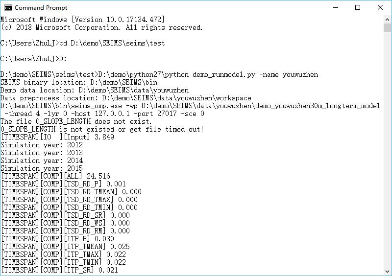
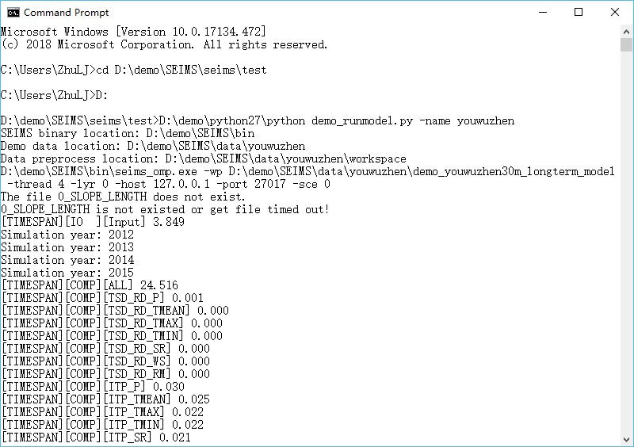
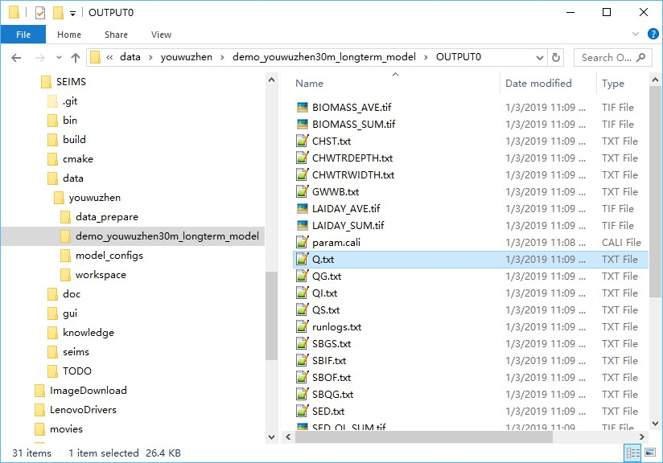
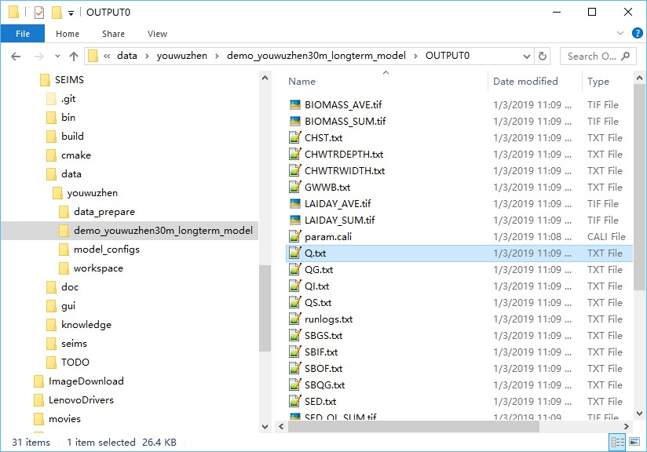

For simple usage, open a terminal (e.g., CMD on Window), enter the following commands to execute the predefined SEIMS-based watershed model of the Youwuzhen watershed (hereafter referred to as the Youwuzhen watershed model):
The simulation will be finished in about 28 seconds (Figure 1). The predefined output information can be found in the model folder (i.e., MODEL_DIR\OUTPUT0), such as Figure 2.
 

Figure 1 Simple usage of the OpenMP version of the Youwuzhen watershed model
 

Figure 2 Predefined outputs of the Youwuzhen watershed model
In simple terms, a SEIMS-based watershed model is a folder (e.g., SEIMS\data\youwuzhen\demo_youwuzhen30m_longterm_model) which consists of several SEIMS configuration files such as file.in, file.out, param.cali, and config.fig.
The file.in and file.out for basic model configuration are required, while param.cali for calibrated model parameters is optional. These three plain text files will be read and imported into the main spatial database during data preprocessing (Section 2:3.2). The MongoDB also can be updated by only running a single preprocessing Python script (i.e., SEIMS\seims\preprocess\db_import_model_parameters.py) when these files are changed such as during the manual calibration.
The config.fig file, the most important configuration file for constructing a SEIMS-based watershed model, is responsible for selecting SEIMS modules to participate in the watershed simulation, as well as specifying the simulation order of SEIMS modules.
The file.in file is designed to define the simulation mode with time-step and the simulation period. Different from the plain text format described in here, the basic format is [TAG]|[VALUE]. Currently, there are four required TAGs which must appear in this file.
MODE: A string that indicates a long-term or storm event simulation. The string here can only be Daily or Storm (case insensitive).INTERVAL: An integer to specify the time-step (or the so-called temporal resolution) of simulation according to the simulation MODE. For long-term simulation, the unit is day, e.g., INTERVAL|1 means the time-step is one day. For storm event simulation, the unit is second, e.g., INTERVAL|3600 means the time-step is one hour.
Specifically, two different time-steps can be assigned for storm event simulation considering the differences between hillslope scale processes and channel scale process. For example, INTERVAL|60,3600 means that the time-step for hillslope scale processes is one minute and one hour for channel scale processes.
STARTTIME: Starting date time of simulation with the format of YYYY-MM-DD HH:MM:SSENDTIME: Ending date time of simulation with the format of YYYY-MM-DD HH:MM:SSFor the Youwuzhen watershed model, which performs a long-term simulation with a time-step of one day and runs from Jan 1, 2012, to Dec 31, 2015, the content of file.in file is as follows.
The file.out file is designed to define the outputs of a SEIMS-based watershed model. The format follows the plain text format described in here. Each line is corresponding to one output variable. The available fields of each line are listed in Table 1.
Table 1 Available fields of file.out configuration file
| Field name | Datatype | Description |
|---|---|---|
| OUTPUTID | String | Unique output identifier, e.g., QRECH for the streamflow at reach outlet. |
| TYPE | String | Data aggregation type for spatial data outputs, i.e., SUM, AVE, MAX, and MIN. Multiple types should be concatenated by En dash. For example, SUM-AVE means output the sum and average simultaneously. For time-series outputs, the TYPE can be NONE. |
| STARTTIME | Datetime string | Starting date time for the current output with the format of YYYY-MM-DD HH:MM:SS |
| ENDTIME | Datetime string | Ending date time for the current output with the format of YYYY-MM-DD HH:MM:SS |
| INTERVAL | Integer | Time-step for output. The default is -9999, which means the same time-step with the simulation will be used. |
| INTERVAL_UNIT | String | Unit for INTERVAL, can be DAY and SEC. The default is -9999, which means the same with the simulation. |
| FILENAME | String | Output filename with suffix, e.g., Q.txt and PET.tif. |
| SUBBASIN | String or Integer | Selected subbasins for output, can be ALL, OUTLET, or the subbasin IDs concatenated with En dash, e.g., 1-4-5. |
Among these fields, only the OUTPUTID is required. The values of missed fields will adopt the default values defined in the available output database which can be extended by users, i.e., SEIMS\seims\preprocess\database\AvailableOutputs.csv. So, users can specify the outputs of QRECH (Streamflow at reach outlet of each time step, m3/s) and PET (Potential evapotranspiration, mm) by simply specifying the output IDs, e.g.,
or specifying more detail information, e.g.,
The param.cali file is designed to define calibrated parameters. The absent of this file or a blank file is allowed and indicates the model will be executed with default parameter values. The format MUST be NAME, IMPACT, and CHANGE, while CHANGE is optional, and no header line is allowed. The NAME MUST be one of the predefined list of parameters which can be extended by users, i.e., SEIMS\seims\preprocess\database\model_param_ini.csv. The CHANGE means the type of impact on the parameter, which can be RC (relative change) or AC (absolute change). The IMPACT is a float value of change, for RC, the new parameter value will be initial_value * impact, while for AC it is initial_value + impact.
Thus, three styles are accepted in param.cali file, such as:
Note that the script db_import_model_parameters.py should be executed once you have modified the param.cali file.
The config.fig file is designed to define SEIMS modules used in a SEIMS-based watershed model. The sequences of these modules will be the execution order during simulation. The basic order of SEIMS modules should be driver factors (i.e., climate data) related modules, modules of hillslope processes, and modules of channel and groundwater routing processes, such as the config.fig content of the Youwuzhen watershed model in Figure 2:4 3. More details about the selected modules of the Youwuzhen watershed model can be found in Qin et al. (2018).
As shown above, different from the plain text format described in here, the basic format for each selected SEIMS module is [MODULE NO.]|[PROCESS NAME]|[METHOD NAME]|[MODULE ID], in which,
MODULE NO. could be any numberPROCESS NAME is the name of the corresponding watershed processMETHOD NAME is the name of the algorithm to simulate the watershed processMODULE ID is the ID of the SEIMS module, i.e., the file name of the corresponding dynamic library (dll, so, or dylib) file. If the module cannot be located or loaded, SEIMS will exit and report an error.SEIMS main program only uses the PROCESS NAME and MODULE ID, while the MODULE NO. and METHOD NAME are just designed for readability. The MODULE ID should match exactly with the ID of SEIMS module. The PROCESS NAME may contain extra configuration information for some modules.
PROCESS NAME, e.g., 0 | Interpolation_1 | Thiessen | ITPTODO: In the current version of SEIMS, the lapse rate of precipitation and temperature are defined as constants, i.e., 0.03 mm/100 m for precipitation and -0.65 degC/100 m for temperature. In the future development, the lapse rate of various meteorological variables should be allowed as inputs according to the study area.
The SEIMS main programs include an OpenMP version (i.e., seims_omp) and a version which is a hybrid of OpenMP and MPI (hereafter referred to as MPI&OpenMP version, i.e., seims_mpi). In the OpenMP version, parallel computing is conducted at the basic-unit level (e.g., gridded cells or irregularly shaped fields) in each module based on OpenMP. In the MPI&OpenMP version, the watershed is first decomposed into subbasins, and MPI-based parallel computation is conducted at the subbasin level. And then within each subbasin, same as the OpenMP version, OpenMP-based parallel computation is conducted at the basic-unit level.
Note: If OpenMP is not supported by the C/C++ compiler, the OpenMP-based parallel computing will not take affect and the executable name of SEIMS main program will be
seims.
The Command Line Interface (CLI) is the recommended way to run SEIMS-based watershed model. The invoking commands are slightly different between the OpenMP version and MPI&OpenMP version.
The complete and recommended usage of the OpenMP version of SEIMS main program is as follows.
In which,
modelPath is the path of the SEIMS-based watershed model (see MODEL_DIR in the configuration file of data preprocessing, Section 2:3.2).threadsNum (Optional) is the number of threads used for OpenMP-based parallel computing, which must be greater or equal than 1 (default).layeringMethod (Optional) can be 0 and 1, which means the routing layering method based on flow direction algorithms of UPDOWN (default, layering from source) and DOWNUP (layering from outlet), respectively.hostname is the IP address of MongoDB server. The default is 127.0.0.1 (i.e., localhost).port is the port number of MongoDB server, and the default is 27017.scenarioID is the ID of BMP scenario which has been defined in the BMP_SCENARIOS collection of Scenario database. By default, the scenarioID is -1, which means no scenario will be applied.calibrationID is the ID (i.e., index) of calibration data which has been defined in PARAMETERS collection of the main database. By default, the calibrationID is -1, which means no calibration will be applied.subbasinID is the subbasin that will be executed. 0 means the whole watershed. 9999 is reserved for Field version.For the Youwuzhen watershed, one of the complete usages is like:
The runtime logs of the OpenMP version were shown in Figure 2:4 1, in which the time-consuming of data Input/Output (IO), computation of each module, and entire simulation were shown.
The output folder was created in the model directory with the folder name followed a naming format of OUTPUT<_MPI>-<FlowDir>-<LayerMethod>-<scenarioID>-<calibrationID>.
The MPI&OpenMP version of SEIMS main program has the same arguments with the OpenMP version but the different way of invoking it (Figure 3:1 1). The basic format to run a MPI program is:
In which,
hostopt (Optional) is the identifier of the input argument of MPI to specify a host list file which is various with different MPI implementations, e.g., -machinefile or -hostfile.hostfile (Optional) is the host list file which may be different with MPI implementation. For example, OpenMPI takes the format like: processNum (Optional) is the number of processes.For the Youwuzhen watershed, one of the complete usages for the MPI&OpenMP version on Windows platform is like:
The corresponding runtime output logs was shown in Figure 2:4 5. Different from the output information of the OpenMP version (Figure 2:4 1), the maximum ([TIMESPAN][MAX]), minimum ([TIMESPAN][MIN]), and average ([TIMESPAN][AVG]) time-consuming of data IO, computation of all modules, and entire simulation derived from each process (i.e., four processes of MPI in this example) are given. The maximum time-consuming is the most used statistics for the evaluation of parallel performance.
Except for the CLI way, SEIMS also provides a configuration file based method to execute model with Python. Same with the simple usage of data preprocessing (2:3.2), a configuration file was also generated according to the local paths of SEIMS during the simple usage of running the Youwuzhen watershed model, such as SEIMS\data\youwuzhen\workspace\runmodel.ini (Figure 2:4 7).
The configuration file of running SEIMS-based watershed model, such as that of the Youwuzhen watershed model shown in Figure 2:4 7, includes several options within one section (i.e., SEIMS_Model) to specify the arguments of SEIMS main programs introduced in previous sections. The full list of the arguments are as follows.
SEIMS_Model:MODEL_DIR: The model path of the study area which includes several configuration files for the watershed modeling.BIN_DIR: The path of SEIMS modules and main programs, which is the same with CPP_PROGRAM_DIR defined in the configuration file of data preprocessing (i.e., the preprocess.ini; see Section 2:3.2) by default.HOSTNAME: IP address of MongoDB server, e.g., 127.0.0.1 (i.e., localhost).PORT: Port of MongoDB server, e.g., 27017 by the default.VERSION: (Optional) Version of SEIMS main program which can be OMP and MPI for OpenMP version and MPI&OpenMP version, respectively. The default is OMP.MPI_BIN: (Optional) Full path of the executable of MPI, e.g., C:\Program Files\Microsoft MPI\Bin\mpiexec.exe.hostopt: (Optional) The identifier of the input argument of MPI to specify a host list file which is various with different MPI implementations, e.g., -machinefile or -hostfile. hostfile: (Optional) The host list file which may be different with MPI implementation.processNum: (Optional) The number of processes, the default is 1.threadsNum: (Optional) The number of threads per process, the default is 4.layeringMethod: (Optional) Routing layering method based on flow direction algorithms, can be 0 or 1.scenarioID: (Optional) The ID of BMP scenario.calibrationID: (Optional) The ID (i.e., index) of calibration data.subbasinID: (Optional) The ID of subbasin, 0 for the whole watershed and 9999 is reserved for Field version.Sim_Time_start: (Optional) Starting date time of simulation with the format of YYYY-MM-DD HH:MM:SS.Sim_Time_end: (Optional) Ending date time of simulation with the format of YYYY-MM-DD HH:MM:SS. If not specified, the starting and ending date time prepared in database (i.e., FILE_IN collection) will be applied.Output_Time_start: (Optional) Starting date time of output items with the format of YYYY-MM-DD HH:MM:SS.Output_Time_end: (Optional) Ending date time of output items with the format of YYYY-MM-DD HH:MM:SS. If specified, the time period of all selected output IDs in FILE_OUT collection will be updated and applied.To run the SEIMS-based watershed model defined by the configuration file described above, please follow the unified format of running SEIMS Python scripts, e.g.,
To demonstrate the ability of SEIMS to construct different watershed models, a simple change is made to the Youwuzhen watershed model, i.e., replacing the Penman-Monteith method (PET_PM) to the Priestley-Taylor method (PET_PT) for the simulation of potential evapotranspiration. Note that, except for the potential evapotranspiration, the PET_PM module also simulates the potential plant transpiration while the PET_PT not, thus the module named AET_PTH is added for the simulation of potential plant transpiration and potential and actual soil evaporation. Meanwhile, the soil evaporation module (SET_LM) is no longer need. The newly customized Youwuzhen watershed model (i.e., the config.fig file) is as follows:
With all model parameters remain the default values, the demo Youwuzhen watershed model and the new customized model were executed respectively. Figure 2:4 9 showed the spatial distributions of average potential evapotranspiration simulated by the Penman-Monteith method (Figure 2:4 9a) and Priestley-Taylor method (Figure 2:4 9b), which have a very similar spatial pattern but different values. The differences of the simulated potential evapotranspiration can also be reflected in the simulated streamflow at the watershed outlet (Figure 2:4 10).